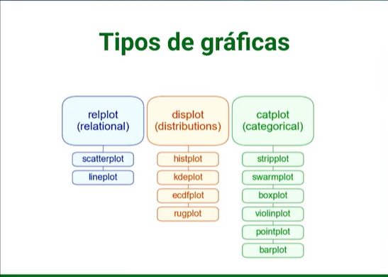
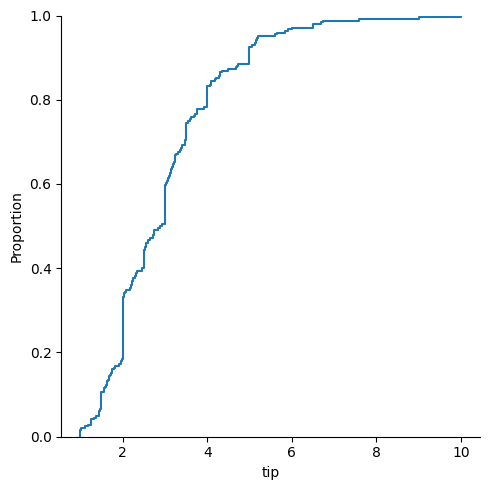
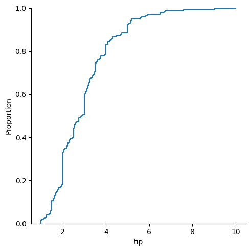

Seaborn#
Seaborn was
built from matplotlib
Integrated for pandas structures
Basic structure#
sns.”chart type”( data=”dataset”, x=”data in x axis”, y=”data in y axis”, hue=”grouping variable” )
import matplotlib.pyplot as plt
import seaborn as sns
sns.barplot(x=["A", "B", "C"], y=[1,3,2])
plt.show()
---------------------------------------------------------------------------
ModuleNotFoundError Traceback (most recent call last)
Cell In[1], line 1
----> 1 import matplotlib.pyplot as plt
2 import seaborn as sns
4 sns.barplot(x=["A", "B", "C"], y=[1,3,2])
ModuleNotFoundError: No module named 'matplotlib'
Chart types in seaborn#

import seaborn as sns
import matplotlib.pyplot as plt
#loading our data
#this data represents tips in a restaurant vs other variables
tips = sns.load_dataset('tips')
print(tips.head(5))
total_bill tip sex smoker day time size
0 16.99 1.01 Female No Sun Dinner 2
1 10.34 1.66 Male No Sun Dinner 3
2 21.01 3.50 Male No Sun Dinner 3
3 23.68 3.31 Male No Sun Dinner 2
4 24.59 3.61 Female No Sun Dinner 4
histogram (.displot())#
sns.displot(data=tips, x="total_bill")
plt.show()
scatter plot (.scatterplot())#
sns.scatterplot(data=tips, x="total_bill", y="tip")
plt.show()
lm plot (linear model)#
this plot shows a correlation between two variables drawing a linear model on the chart
sns.lmplot(data=tips, x="total_bill", y="tip")
plt.show()
Scatter plot with group by#
import seaborn as sns
import matplotlib.pyplot as plt
#import dataset
tipsdata = sns.load_dataset("tips")
tipsdata.head()
#show dataset
print(tipsdata.head())
#scatter plot, segment tip % total_bill correlation by day
sns.scatterplot(data=tipsdata, x="total_bill", y="tip", hue="day", palette ="pastel")
plt.show()
total_bill tip sex smoker day time size
0 16.99 1.01 Female No Sun Dinner 2
1 10.34 1.66 Male No Sun Dinner 3
2 21.01 3.50 Male No Sun Dinner 3
3 23.68 3.31 Male No Sun Dinner 2
4 24.59 3.61 Female No Sun Dinner 4
heatmap#
# see the correlation among the variables
tips.corr()
| total_bill | tip | size | |
|---|---|---|---|
| total_bill | 1.000000 | 0.675734 | 0.598315 |
| tip | 0.675734 | 1.000000 | 0.489299 |
| size | 0.598315 | 0.489299 | 1.000000 |
#heatmap of the correlations
sns.heatmap(tips.corr())
<AxesSubplot: >
Se pueden agregar diferentes parámetros:
annot muestra el valor de la correlación
cmap color
linewidthsespacio entre variables
linecolor color de las líneas
vminv, max valores máximos y mínimos
cbar=False eliminar la barra
#heatmap of the correlations
sns.heatmap(tips.corr(), annot= True, cmap='coolwarm', linewidths=5, linecolor='black',
vmin=0.5,vmax=1,cbar=False);
Kernel Density Estimation (KDE)#
sns.kdeplot(data= tips, x= 'total_bill');
#In statistics, kernel density estimation (KDE) is the application of kernel smoothing for
#probability density estimation, i.e., a non-parametric method to estimate the probability
#density function of a random variable based on kernels as weights.
Change chart type (kind)#
Remember the image of the seaborn chart categories
you can only change to a sub category if the main category corresponds in each case.
print(tips.head(5))
total_bill tip sex smoker day time size
0 16.99 1.01 Female No Sun Dinner 2
1 10.34 1.66 Male No Sun Dinner 3
2 21.01 3.50 Male No Sun Dinner 3
3 23.68 3.31 Male No Sun Dinner 2
4 24.59 3.61 Female No Sun Dinner 4
#Example
#lineplot is under relplot
sns.relplot(data=tips, x="total_bill", y="tip", kind="line")
plt.show()
#rugplot is under distplot
sns.displot(data=tips, x="tip", kind="ecdf")
plt.show()
 

Remove Legend, change palette & transparency#
#note that the hue argument would add a legend of sex, but legend=False removed it.
#we also changed the line transparency with alpha=0.5
sns.displot(data= tips, x= 'total_bill', hue = 'sex', kind = 'kde', legend= False, palette='dark', alpha = .5)
plt.show()
Group by (hue)#
The argument hue allows you to do a segmentation in the chart, just as group by in pandas
#let's use this data from the lesson above
print(tips.head(5))
sns.scatterplot(data=tips, x="total_bill", y="tip", hue="sex")
plt.show()
total_bill tip sex smoker day time size
0 16.99 1.01 Female No Sun Dinner 2
1 10.34 1.66 Male No Sun Dinner 3
2 21.01 3.50 Male No Sun Dinner 3
3 23.68 3.31 Male No Sun Dinner 2
4 24.59 3.61 Female No Sun Dinner 4
Multiple charts#
In this chapter see:
how to create multiple charts one over the other
how to create multiple charts one next to the other
import seaborn as sns
import matplotlib.pyplot as plt
#work with the following data
tips = sns.load_dataset('tips')
tips.head(2)
| total_bill | tip | sex | smoker | day | time | size | |
|---|---|---|---|---|---|---|---|
| 0 | 16.99 | 1.01 | Female | No | Sun | Dinner | 2 |
| 1 | 10.34 | 1.66 | Male | No | Sun | Dinner | 3 |
Combine charts (overlapping)#
You can combine charts literally writing one line of code below the other.
#first chart
sns.boxplot(data=tips,x="day",y="total_bill",hue="sex", dodge=True)
#second chart
sns.swarmplot(data=tips,x="day",y="total_bill",hue="sex", palette='dark:0', dodge=True)
#the dodge argument is for the swarm plot to segment by sex
plt.show()
One next to the other#
the argument col separates the charts
sns.relplot(data= tips, x= 'total_bill', y = 'tip', hue= 'day', kind= 'scatter', col = 'time');
Jointplot#
Joinplot joins two different charts (not overlapping, nor one next to the other. see below for details)
import seaborn as sns
import matplotlib.pyplot as plt
#loading our data
tips = sns.load_dataset('tips')
tips.head()
#jointplot chart
sns.jointplot(data=tips, x="total_bill", y="tip", hue="sex", kind="scatter");
#with kind you edit the type of the main chart

You can add more arguments to do a better analysis
marginal_ticks#
marginal_ticks creates a table for the external chart
sns.jointplot(data=tips, x="total_bill", y="tip", hue="sex", kind="kde", marginal_ticks=True);
marginal_kws#
marginal_kws allos to modify determined parameters for the external chart
sns.jointplot(data=tips, x="total_bill", y="tip", hue="sex", kind="hist",
marginal_ticks=True, #shows a small table for the external chart
marginal_kws=dict(bins= 25, fill = True, multiple= 'dodge') #arguments only affect the external chart
)
<seaborn.axisgrid.JointGrid at 0x7f9de75bbd30>
Modify style,pallette & font (Set)#
Modify size#
plt.figure(figsize=(1,1))
sns.set()
sns.barplot(x=["A", "B", "C"], y=[1,3,2])
plt.show()
Set (modify style, pallette & font#
Set allows to modify:
style and the
font
palette
font scale
simultaneously
sns.set(style="dark", palette="Spectral", font_scale=3)
sns.barplot(x=["A", "B", "C"], y=[1,3,2])
plt.show()
i will restore the default styles settings by calling set() with no arguments
sns.set()
sns.barplot(x=["A", "B", "C"], y=[1,3,2])
plt.show()
Seaborn color palletes#
link:
https://seaborn.pydata.org/generated/seaborn.color_palette.html#seaborn.color_palette
some examples:
sns.color_palette("husl", 9)
sns.color_palette("Spectral", as_cmap=True)
![Spectral colormap]( "Spectral")
sns.color_palette("dark:#5A9_r", as_cmap=True)

sns.color_palette("pastel")
Seaborn themes#
Link:
https://seaborn.pydata.org/generated/seaborn.set_theme.html#seaborn.set_theme
Save your chart as a png#
Hola, si desean guardar los diagramas como imagen para descargarlos y usarlos en otro lado pueden usar el plt.savefig(“name.png”)
Chart customization#
import seaborn as sns
import matplotlib.pyplot as plt
tipsdata = sns.load_dataset("tips")
tipsdata.head()
| total_bill | tip | sex | smoker | day | time | size | |
|---|---|---|---|---|---|---|---|
| 0 | 16.99 | 1.01 | Female | No | Sun | Dinner | 2 |
| 1 | 10.34 | 1.66 | Male | No | Sun | Dinner | 3 |
| 2 | 21.01 | 3.50 | Male | No | Sun | Dinner | 3 |
| 3 | 23.68 | 3.31 | Male | No | Sun | Dinner | 2 |
| 4 | 24.59 | 3.61 | Female | No | Sun | Dinner | 4 |
Acumulative charts#
sns.histplot(data=tipsdata, x="tip", bins = 15, cumulative=True)
plt.show()
Statistic charts#
Argument is stat() and the options are:
[‘count’, ‘density’, ‘percent’, ‘probability’ or ‘frequency’]
sns.histplot(data = tipsdata, x= 'tip', bins = 15, hue= 'sex', stat = 'density')
plt.show()
sns.histplot(data = tipsdata, x= 'tip', bins = 15, hue= 'sex', stat = 'frequency')
plt.show()
Chart grouping#
Argument is multiple() and the options are:
[‘layer’, ‘stack’, ‘fill’, ‘dodge’]
#first plot with stack
sns.histplot(data = tipsdata, x= 'tip', bins = 15, hue= 'sex', multiple = 'stack')
plt.show()
#second plot with dodge
sns.histplot(data = tipsdata, x= 'tip', bins = 15, hue= 'sex', multiple = 'dodge')
plt.show()
Area below the curve#
#first plot with stack
sns.kdeplot(data = tipsdata, x= 'tip', hue= 'sex', fill = True)
plt.show()
Chart types for categorical data#
import seaborn as sns
import matplotlib.pyplot as plt
tips = sns.load_dataset('tips')
tips.head(2)
#the categorical variables are "sex", "smoker", "day", "time"
| total_bill | tip | sex | smoker | day | time | size | |
|---|---|---|---|---|---|---|---|
| 0 | 16.99 | 1.01 | Female | No | Sun | Dinner | 2 |
| 1 | 10.34 | 1.66 | Male | No | Sun | Dinner | 3 |
Note that the categorical variables are “sex”, “smoker”, “day”, “time”
Catplot#
catplot is useful to work with categorical data
this chart will let you to do a double group by or double segmentation
sns.catplot(data=tips, x="day", y="total_bill",hue="sex",dodge=True,kind="box",col="smoker")
plt.show()
note that the first segmentation was in “hue” and the second in “col”
“Bar plot (count)#
sns.countplot(data = tips, x="day", hue="sex");
swarm plot(dots diagram)#
This chart is similar to stripplot, however, this one shows better the data concentration
sns.swarmplot(data = tips, x="day", y="total_bill", hue="sex");
sns.swarmplot(data = tips, x="day", y="total_bill", hue="sex", dodge=True);
#dodge fixes the issue of one category over the other
stripplot#
Looks similar to swarm plot, but data is agglomerated in this case
sns.stripplot(data = tips, x="day", y="total_bill", hue="sex", dodge=True);
boxplot separated categories#
sns.boxplot(data=tips,x="day",y="total_bill",hue="sex", showfliers=True)
#i put showfliers argument in case you want to remove outliers
plt.show()
violin plot#
this plot is similar to a boxplot, but does not show quartile. It shows the data concentration
sns.violinplot(data=tips, x="day", y="total_bill")
plt.show()
Boxplot + Swarmplot#
#first chart
sns.boxplot(data=tips,x="day",y="total_bill",hue="sex", dodge=True)
#second chart
sns.swarmplot(data=tips,x="day",y="total_bill",hue="sex", palette='dark:0', dodge=True, marker="<")
#the dodge argument is for the swarm plot to segment by sex
plt.show()
Correlation charts#
The main chart to identify correlations is the scatter chart, this chapter will focus on this
import seaborn as sns
import matplotlib.pyplot as plt
#data to work on
tips = sns.load_dataset('tips')
tips.head(2)
| total_bill | tip | sex | smoker | day | time | size | |
|---|---|---|---|---|---|---|---|
| 0 | 16.99 | 1.01 | Female | No | Sun | Dinner | 2 |
| 1 | 10.34 | 1.66 | Male | No | Sun | Dinner | 3 |
correlation by categories#
sns.scatterplot(data= tips, x= 'total_bill', y = 'tip', hue= 'day', palette="pastel");
lm plot with multiple categories#
sns.lmplot(data= tips, x= 'total_bill', y = 'tip', hue= 'day', palette="dark");
in this chart, it does not look organized because of the data. let’s see a usefull case for this chart
iris = sns.load_dataset("iris")
iris.head()
sns.lmplot(data=iris, x="sepal_length", y="petal_length", hue="species");
second segmentation in legend#
with the argument style you can change the dot shape based on another category
change dot shape#
this will also change the dots shape
sns.scatterplot(data= tips, x= 'total_bill', y = 'tip', hue= 'day', palette="pastel", style="time");
change dot shape (but you deciding it)#
you just have to define a dictionary in which
key is the variable name
value is the dot shape “D” for diamond, “s” for squared, etc.
#define the shape dictionary
shapes = { "Lunch":"D", "Dinner":"s"}
sns.scatterplot(data= tips, x= 'total_bill', y = 'tip', hue= 'day', palette="pastel", style="time",
markers=shapes);
change dot size based on numerical variable#
you can change the dots size based on a numerical variable, for example *the dots are bigger if the “size” variable for this dataset is bigger
sns.scatterplot(data= tips, x= 'total_bill', y = 'tip', hue= 'day', palette="pastel", size="size")
plt.show()
Multiple correlation charts#
sns.relplot(data= tips, x= 'total_bill', y = 'tip', hue= 'day', palette="pastel", size="size", col="time", kind="scatter")
plt.show()
Move the legend (relocate)#
#make the chart bigger
plt.figure(figsize=(8,8))
sns.scatterplot(data= tips, x= 'total_bill', y = 'tip', hue= 'day', style="time", size="size")
plt.legend(loc="center", bbox_to_anchor=(1.2,0.5)) #bbox_to_anchor(xposition, yposition)
plt.show()
Pairplot (correlation among all the variables)#
# see the correlation among the variables
tips.corr() #---> Muestra las variables correlacionadas entre si
| total_bill | tip | size | |
|---|---|---|---|
| total_bill | 1.000000 | 0.675734 | 0.598315 |
| tip | 0.675734 | 1.000000 | 0.489299 |
| size | 0.598315 | 0.489299 | 1.000000 |
This function will show you the correlation among all the numeric variables. for this particular dataset, the numeric ones are [“total_bill”, “tip”, “size”]
sns.pairplot(data=tips)
plt.show()
Pairplot + diag_kind + hue#
You can know the correlation among all the variables given a segmentation, and also change the diagonal charts.
iris = sns.load_dataset("iris")
iris.head()
sns.pairplot(data=iris, hue="species", palette="inferno", diag_kind="kde");
Pairplot corner#
The argument corner eliminates the upper diagonal, avoiding repeated charts
sns.pairplot(data= tips, corner=True);
Line charts#
#loading our data
import seaborn as sns
import matplotlib.pyplot as plt
tips = sns.load_dataset('tips')
tips.head(2)
| total_bill | tip | sex | smoker | day | time | size | |
|---|---|---|---|---|---|---|---|
| 0 | 16.99 | 1.01 | Female | No | Sun | Dinner | 2 |
| 1 | 10.34 | 1.66 | Male | No | Sun | Dinner | 3 |
sns.lineplot(data=tips, x="total_bill", y="tip", hue="time", size="size", style="day");
relplot#
you can do the same with relplot and modifying the chart type later on.
sns.relplot(data= tips, x= 'total_bill', y = 'tip', hue= 'time', style= 'day', size='size', kind= 'line');
![Created in deepnote.com]() Created in Deepnote
Created in Deepnote